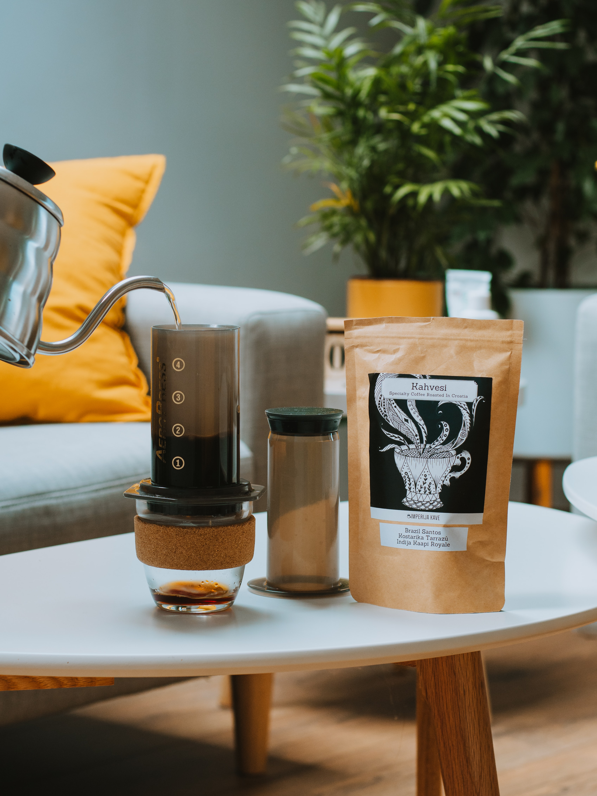

Aeropress: How To
(JH Method)

The Aeropress, not a normal recipe but one worth learning
Ingredients
- At least 13g coffee
- Filtered water, 80-90°c
- Sugar (never)
- Milk (rarely)
Directions
- Add a filter to your aeropress cap, there is no need to wet it first
- Screw the cap onto the bottom of the aeropress and place on top of your cup
- Weigh out 13-18g of coffee into the chamber
- Pour in around 50g of water, wetting as much off of the ground coffee as possible
- Wait 15-20 seconds, this is known as the bloom
- Pour in 200 ml of water
- Put the plunger into the top of the chamber and wait
- Wait a little longer, maybe give it a little swirl to break up any bed that might form
- Wait a little longer still... 2 minutes has now elapsed
- Plunge! Plunging should take around 30 seconds
- Shake it off!
- Enjoy!